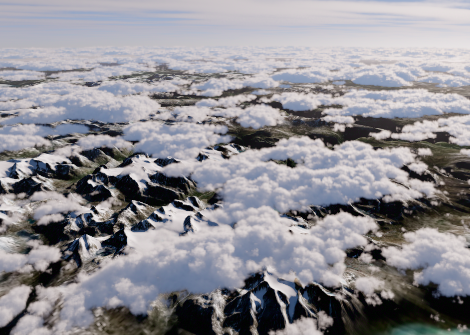
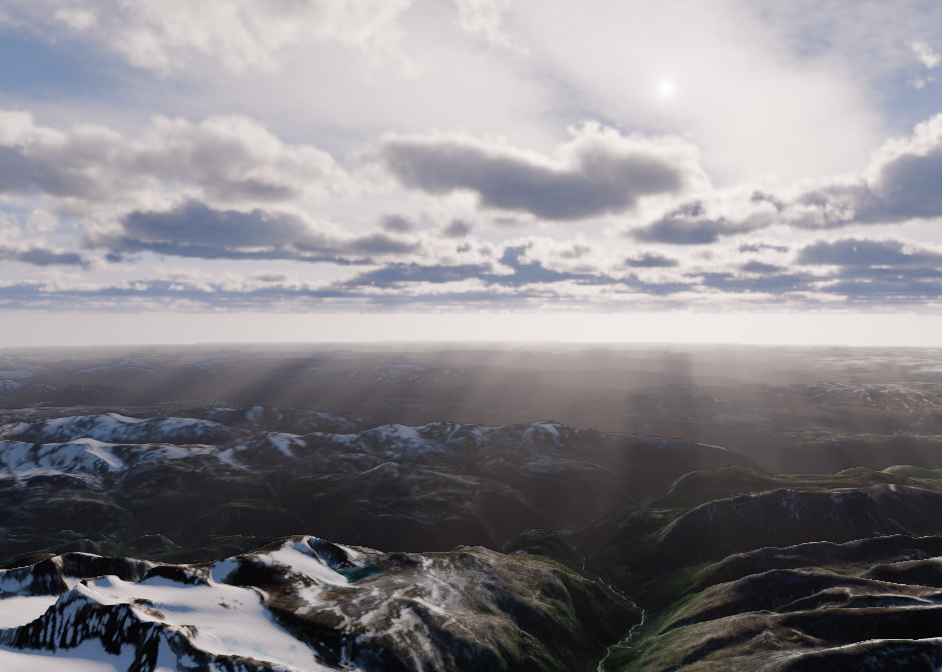
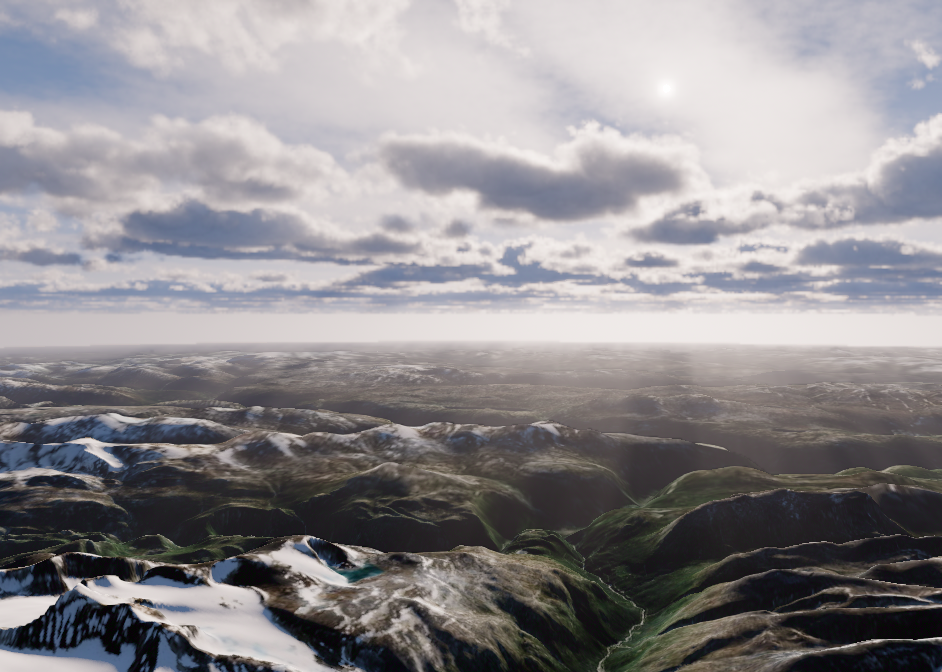
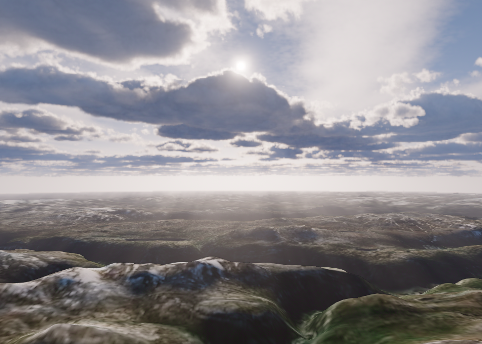
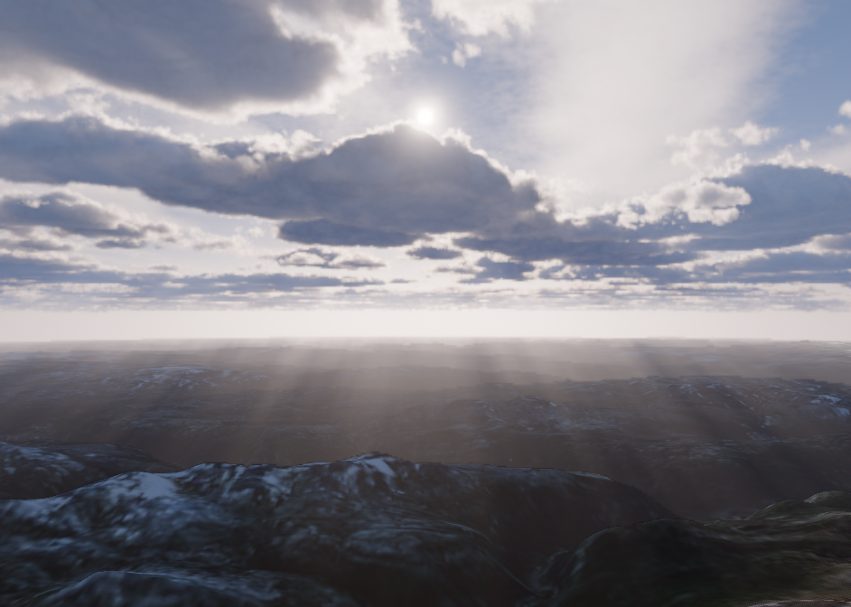
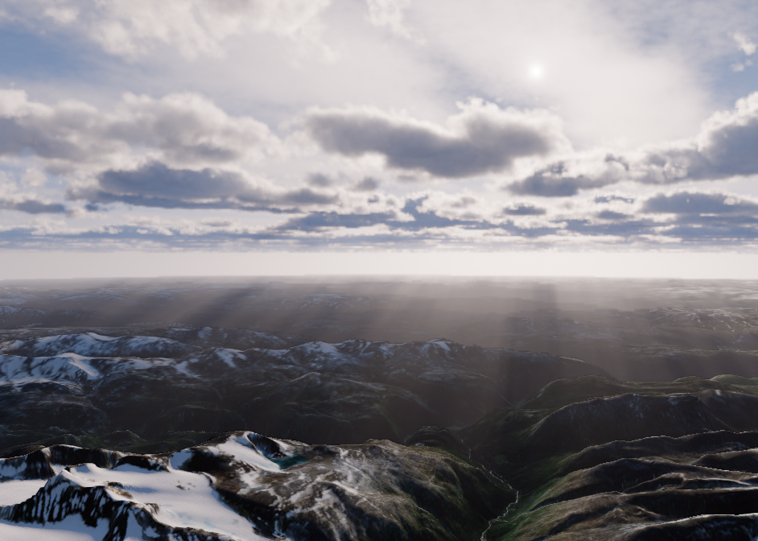
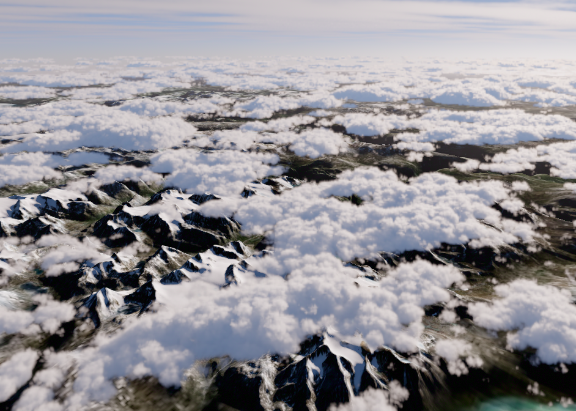
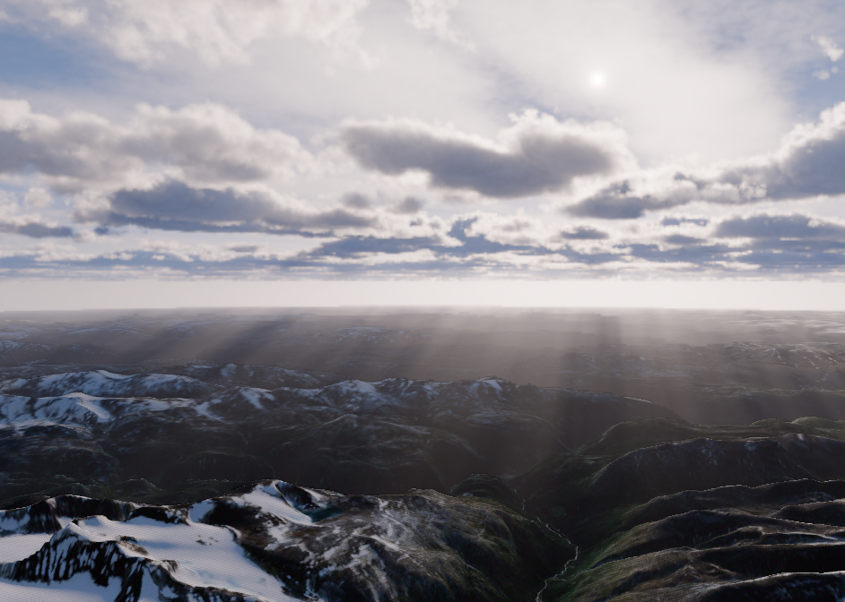
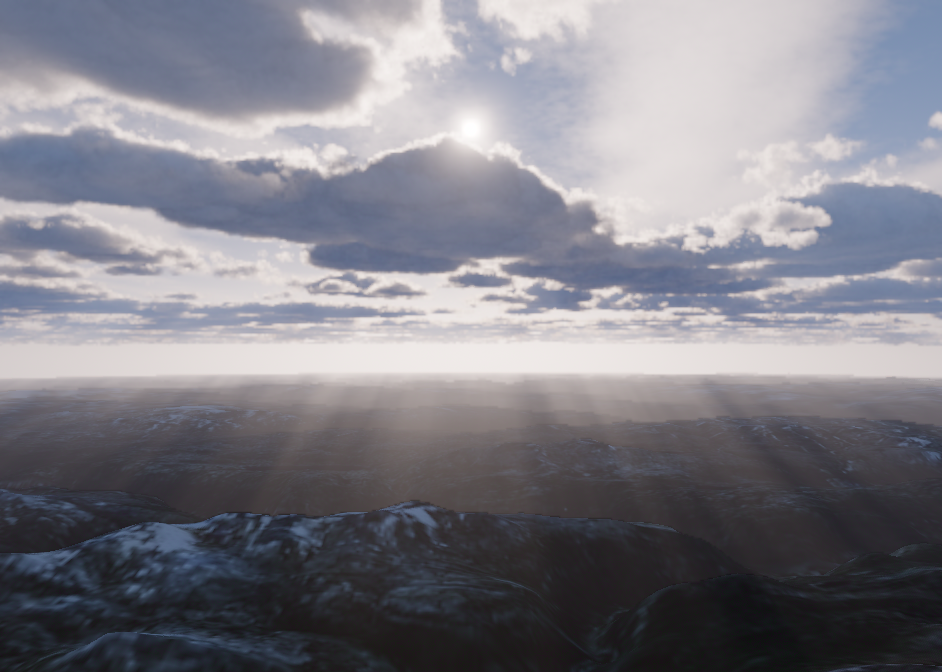
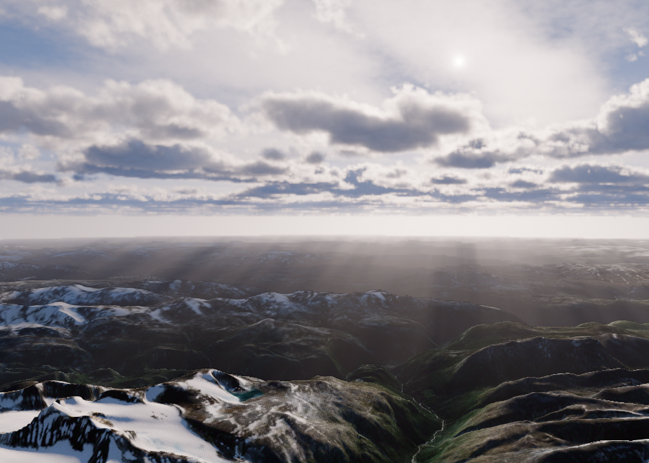

D111 · 하강 결함 분리 비교
같은 DEM1.5×/커튼빛 · display942×672 · high50%/전체 cloud-buffer TAA. 아홉 설정의 정착27프레임과 실제 렌더 정역영상4개. 아직 해결 판정 전입니다.
실시간 구름 TAA 보완 후보
같은8초 경로의 실제 렌더 영상
카메라 .265→.365→.265, 바람OFF. 첫번째 기준과 두번째 구름 현재 반영5%를 먼저 비교하세요. 원본 canvas 녹화, AI영상 아닙니다. 녹화 중 GPU 값은 성능표에 사용하지 않습니다.
기준 · 구름10%/그림자1%구름5% · 잡음/잔상 비교그림자10% · 반응 비교촘촘march · 비용 증가기준

p0.3 · GPU p50 8.15ms/p95 9.21ms · 60query
shadow alpha 0.01 · minStep 50
p0.345 · GPU p50 8.26ms/p95 10.06ms · 60query
shadow alpha 0.01 · minStep 50p0.365 · GPU p50 7.79ms/p95 9.56ms · 60query
shadow alpha 0.01 · minStep 50지형 그림자 OFF
p0.3 · GPU p50 7.29ms/p95 9.06ms · 60query
shadow alpha 0.01 · minStep 50
p0.345 · GPU p50 7.27ms/p95 8.28ms · 60query
shadow alpha 0.01 · minStep 50
p0.365 · GPU p50 6.85ms/p95 8.93ms · 60query
shadow alpha 0.01 · minStep 50그림자 깊이 여유20km
p0.3 · GPU p50 7.46ms/p95 8.49ms · 60query
shadow alpha 0.01 · minStep 50p0.345 · GPU p50 8.17ms/p95 9.36ms · 60query
shadow alpha 0.01 · minStep 50
p0.365 · GPU p50 7.93ms/p95 8.70ms · 60query
shadow alpha 0.01 · minStep 50그림자 jitter OFF
p0.3 · GPU p50 8.30ms/p95 9.34ms · 60query
shadow alpha 0.01 · minStep 50
p0.345 · GPU p50 8.29ms/p95 9.25ms · 60query
shadow alpha 0.01 · minStep 50p0.365 · GPU p50 7.55ms/p95 8.20ms · 60query
shadow alpha 0.01 · minStep 50촘촘한 볼륨 샘플

p0.3 · GPU p50 11.42ms/p95 12.42ms · 60query
shadow alpha 0.01 · minStep 10p0.345 · GPU p50 11.47ms/p95 12.67ms · 60query
shadow alpha 0.01 · minStep 10p0.365 · GPU p50 10.06ms/p95 11.25ms · 60query
shadow alpha 0.01 · minStep 10그림자 범위200km
p0.3 · GPU p50 7.15ms/p95 8.76ms · 60query
shadow alpha 0.01 · minStep 50
p0.345 · GPU p50 8.14ms/p95 9.25ms · 60query
shadow alpha 0.01 · minStep 50
p0.365 · GPU p50 7.46ms/p95 8.55ms · 60query
shadow alpha 0.01 · minStep 50그림자 현재 반영10%
p0.3 · GPU p50 8.33ms/p95 9.76ms · 60query
shadow alpha 0.1 · minStep 50
p0.345 · GPU p50 8.33ms/p95 8.88ms · 60query
shadow alpha 0.1 · minStep 50p0.365 · GPU p50 7.94ms/p95 9.79ms · 60query
shadow alpha 0.1 · minStep 50그림자 시간 누적OFF
p0.3 · GPU p50 8.18ms/p95 9.48ms · 60query
shadow alpha 0.01 · minStep 50p0.345 · GPU p50 8.10ms/p95 10.02ms · 60query
shadow alpha 0.01 · minStep 50p0.365 · GPU p50 7.66ms/p95 9.70ms · 60query
shadow alpha 0.01 · minStep 50구름 현재 반영5%
p0.3 · GPU p50 9.26ms/p95 10.70ms · 60query
shadow alpha 0.01 · minStep 50p0.345 · GPU p50 8.79ms/p95 9.69ms · 60query
shadow alpha 0.01 · minStep 50p0.365 · GPU p50 8.43ms/p95 9.06ms · 60query
shadow alpha 0.01 · minStep 50